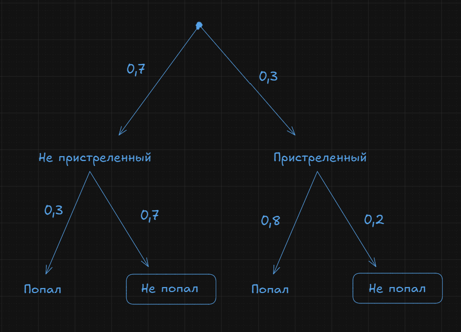
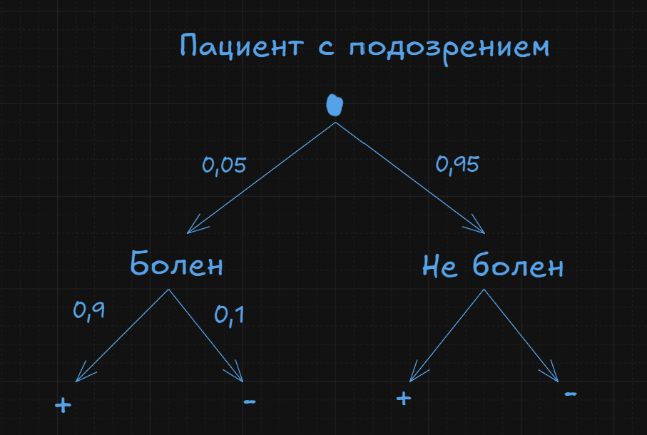
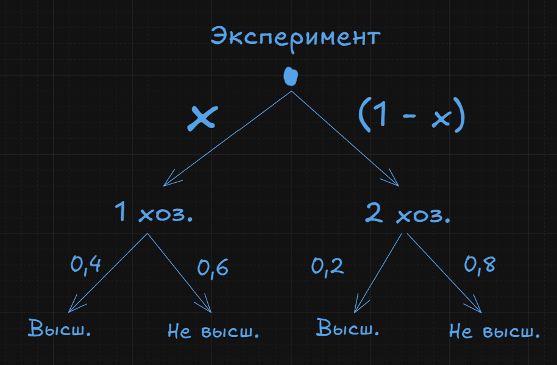
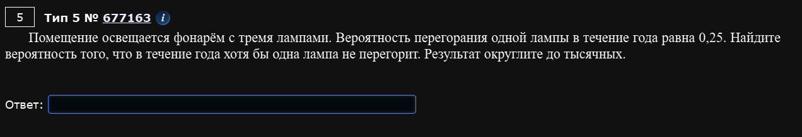
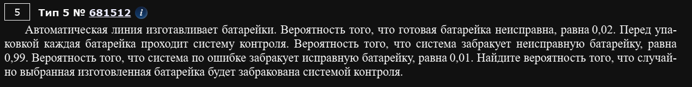
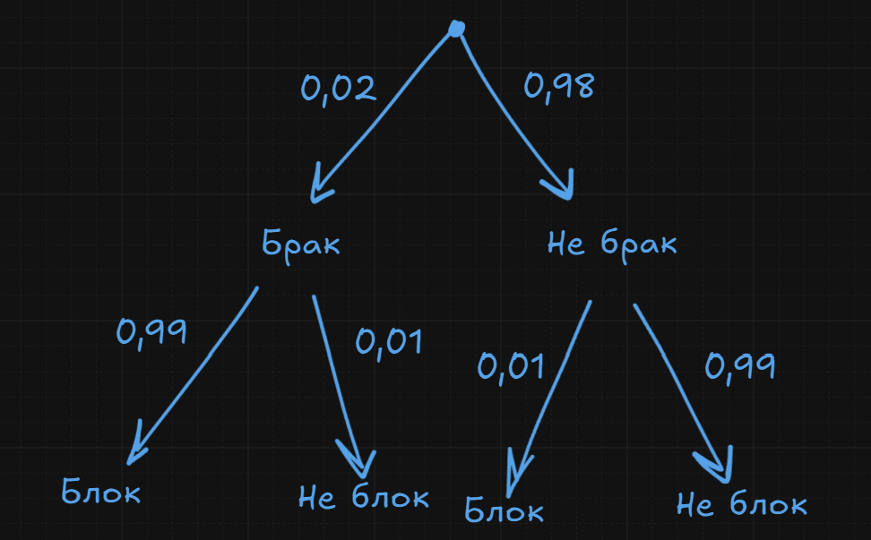

Кофейные автоматы
В торговом центре два одинаковых автомата продают кофе. Вероятность того, что к концу дня в первом автомате закончится кофе равна 0,3. Вероятность того, что кофе закончится в обоих автоматах равна 0,12. Найдите вероятность того, что к концу дня кофе останется в обоих автоматах.
Рассмотрим все исходы:
- Кофе остался в обоих автоматах
- Кофе закончился в первом, но остался во втором
- Кофе закончился во втором, но остался в первом
- Кофе закончился в обоих автоматах
По шагам:
- Вероятность исхода 4 = 0,12, а вероятность события 2 + 4 = 0,3 (из условия). Стало быть, вероятность исхода 2 равна
0,3 - 0,12 = 0,18. - Точно такая же логика с событиями 3 + 4 = 0,3. Т.е. вероятность исхода 3 равна
0,3 - 0,12 = 0,18 - Наконец, вероятность события 4 равна
1 - (0,18 * 2 + 0,12) = 0,52
Тупой вопрос: почему нельзя вот так?:
Ну раз у нас 0,3 - это вероятность того, что кофе закончится в одном из кофейных автоматов, то вероятность того, что оно там останется равна 0,7. А раз нам надо вероятность того, что оно останется в обоих, то это 0,7 * 0,7 = 0,49
Мы не можем умножать эти события, они НЕ независимы. Нам в условии об этом уже сказали, когда назвали вероятности. Если бы события были независимы, то должно было быть
0,3 * 0,3 = 0,09, а нам дали0,12. Это обстоятельство прямо значит, что события ЗАВИСИМЫ.
Ковбой
Ковбой Джон попадает в муху на стене с вероятностью 0,8, если стреляет из пристрелянного револьвера. Если Джон стреляет из не пристрелянного револьвера, то он попадает в муху с вероятностью 0,3. На столе лежат 10 револьверов, из них только 3 пристрелянные. Ковбой Джон видит на стене муху, наудачу хватает первый попавшийся револьвер и стреляет в муху. Найдите вероятность того, что Джон промахнется.
Гениальная, несравненная, легендарная цепочка событий. Решает почти все.
Цепочка событий - это такой метод решения, когда вы расписывайте все возможные исходы с помощью дерева.
- Вдоль одной ветки дерева вероятности можно умножать
- От разных веток дерева события можно складывать
Как-то вот так:

Стало быть, мы просто складываем полные вероятности на не попал:
ПЦР-тесты
Всем пациентам с подозрением на гепатит делают анализ крови. Если анализ выявляет гепатит, то результат анализа называется положительным. У больных гепатитом пациентов анализ дает положительный результат с вероятностью 0,9. Если пациент не болен гепатитом, то анализ может дать ложный положительный результат с вероятностью 0,01.
Известно, что 5% пациентов, поступающих с подозрением на гепатит, действительно больны гепатитом. Найдите вероятность того, что результат анализа у пациента, поступившего в клинику с подозрением на гепатит, будут положительны.

Агрофирма закупает куриные яйца в двух домашних хозяйствах. Из первого хозяйства 40% яиц - яйца высшей категории, а из второго хозяйства - 20% яиц высшей категории. Всего высшую категорию получает 35% яиц. Найдите вероятность того, что яйцо высшей категории, купленное у этой агрофирмы, окажется из первого хозяйства.

Тут необычная задача. Мы не знаем какова вероятность достать нам яйцо из определенного хозяйства. Не беда: будем решать уравнением.
Таким образом, ответ 0,75
Стрелок в тире стреляет по мишени до тех пор пока не попадет в нее. Вероятность попадания при каждом отдельном выстреле равна p = 0,6. Найдите вероятность того, что стрелку потребуется ровно 3 попытки.
Тут епта можно даже без схемы. Цепочка событий такая: мазила --> мазила --> попал. Т.е. это:
При артиллерийской стрельбе автоматическая система делает выстрел по цели. Если цель не уничтожена, то система делает повторный выстрел. Выстрелы повторяются до тех пор, пока цель не будет уничтожена. Вероятность уничтожения некоторой цели при первом выстреле равна 0,3, а при каждом последующем - 0,9. Какое минимальное кол-во выстрелов потребуется для того, чтобы вероятность уничтожения цели была не менее 0,96?
Епта, ну если вероятность попасть за N выстрелов не менее 0,96, то вероятность ВСЕХ промахов за N выстрелов будет не более 0,04. Ну, это значит, что нам просто ручками нужно подобрать такое кол-во выстрелов при котором наша вероятность будет не более 0,04.
Ответ: 3 выстрела.
Можно через попадания, но тогда логика немного другая. Как он может попасть? Либо первым выстрелом, это 0,3, либо вторым т.е. 0,3 + 0,7*0,9, либо третьим 0,3 + 0,7*0,9 + 0,7*0,1*0,9.
Маша коллекционирует принцесс из Киндер-сюрпризов. Всего в коллекции 10 разных принцесс, и они равномерно распределены, то есть в каждом очередном Киндер-сюрпризе может с равными вероятностями оказаться любая из 10 принцесс.
У Маши уже есть 7 разных принцесс из коллекции. Какова вероятность того, что для получения следующей принцессы Маше придется купить еще одно или два шоколадных яйца?
Есть два интересующих нас исхода:
- Маша покупает одно яйцо и ей тут же попадается новая принцесса. Тогда вероятность такого события
0,3. - Маша покупает первой яйцо - там старая принцесса. Тогда Маша покупает второе яйцо и там новая принцесса. Тогда вероятность такого события
0,7*0,3.
Итого:
В классе 16 учащихся, среди них два друга - Петя и Ваня. Учащихся случайным образом разбивают на 4 равные группы. Найдите вероятность того, что Петя и Ваня окажутся в одной группе.
Епта, ну если Петя сел на одно из мест в одной группе, то Ване осталось 3 места (оставшихся в группе) из 15 (всего оставшихся мест). Т.е. ответ .
Лайфхак в таких и подобных задачах следующий: посадите одного чела сразу, а второго потом к нему. Проще думать про одного, чем про двоих.
Игральную кость бросили два раза. Известно, что два очка не выпали ни разу. Найдите при этом условии вероятность события “сумма выпавших очков окажется равна 4”.
Сколько всего элементарных исходов? 36, епта. А в скольких из них выпала 2? В 11, епта. Т.е. подходящих нам 25 исходов (это общее число исходов при условии, что “два очка не выпали ни разу”). А сколько исходов, когда сумма выпавших очков окажется равна 4? Ну 2 епта: либо 3 и 1, либо 1 и 3. Ну и все, епта
Игральную кость бросали до тех пор, пока сумма выпавших очков не превысила число 6. Какова вероятность того, что для этого потребовалось два броска? Ответ округлите до сотых.
| Первый бросок | Второй бросок |
|---|---|
| 1 | 6 |
| 2 | 5 и 6 |
| 3 | 4 и 5 и 6 |
| 4 | 3 и 4 и 5 и 6 |
| 5 | 2 и 3 и 4 и 5 и 6 |
| 6 | 1 и 2 и 3 и 4 и 5 и 6 |
Ну т.е. всего элементарных исходов: 1 + 2 + 3 + 4 + 5 + 6 = 21 исход. А всего исходов? 36. Тогда:
Ответ: 0,583.
Разберём аккуратно.
1. Что требуется найти
Нужно найти вероятность события:
из двух корзин достали либо два яблока, либо два персика.
Это два возможных случая:
- яблоко + яблоко
- персик + персик
Итоговая вероятность:
(складываем, потому что события несовместимые)
2. Вероятности для каждой корзины
Первая корзина
2 яблока, 6 персиков
всего:
Вероятности:
Вторая корзина
8 яблок, 12 персиков
всего:
Вероятности:
3. Вероятность двух яблок
Сокращаем:
4. Вероятность двух персиков
5. Складываем
✅ Ответ:
Маленький лайфхак для таких задач
Если спрашивают «одинаковые фрукты», почти всегда быстрее считать так:
а не расписывать все 4 комбинации.
Это классическая биномиальная схема:
5 выстрелов, вероятность попадания в каждом (p=0.8).
Формула вероятности ровно (k) успехов из (n):
где (C_n^k) — число сочетаний.
1. Вероятность попасть ровно в 4 мишени
Считаем:
2. Вероятность попасть ровно в 3 мишени
3. Во сколько раз первая вероятность больше второй
✅ Ответ:
Можно еще вот так:
0,8 * 0,2^3 = 0,0064
1. Всего фломастеров
Синие: 8
Красные: 6
Зелёные: 11
Всего:
Выбирают 2 фломастера.
Способ через сочетания (самый удобный)
2. Общее число способов выбрать 2 фломастера
3. Благоприятные исходы
(один синий и один красный)
Выбираем:
- 1 из 8 синих
- 1 из 6 красных
4. Вероятность
Сокращаем:
✅ Ответ:
💡 Почему здесь не появляется порядок?
Потому что фломастеры берут одновременно.
Сочетания автоматически учитывают, что:
- синий + красный
- красный + синий
— это один и тот же набор.
Если хочешь, покажу ультрабыстрый способ решать такие задачи за 3 секунды, который часто используют олимпиадники и составители ЕГЭ.
Всего есть 4 равновероятных исхода:
- Обе перегорят
= 0,25 - Первая перегорит, вторая - нет
= 0,25 - Первая не перегорит, вторая - да
= 0,25 - Ни одна не перегорит
= 0,25
Нас интересует хотя бы одна не перегорит. Т.е. подходит 3 из 4 исходов. Т.е. ответ 0,75

Тут еще проще. Нас НЕ интересует только один исход - когда все 3 лампы перегорят. Вероятность этого = 0,25^3 = 0,015625. Т.е. Вероятность, что не перегорит хотя бы одна = 1 - 0,015625 = 0,984.

